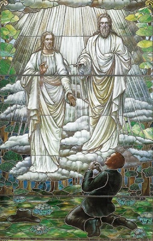

Sacred Texts Mormonism
Buy this Book at Amazon.com
|

Joseph Smith's First Vision: Unknown artist, Stained Glass Window at the Museum of Church History and Art in Salt Lake City [1913] (Public Domain Image) |
History of Utah, 1540-1886by Hubert Howe Bancroft[1889] |
One of the problems with literature about and by Mormons, is that, pro or con, there are very few texts without an extreme point of view. This is one of the few comprehensive histories of 19th century Mormonism which was written with a center of gravity close to what we moderns call a 'neutral point of view.' Written by (or under the aegis of) H.H. Bancroft, the foremost historian of the Western US, this massive book tells the story of the settlement of what would become the state of Utah. This is, naturally, closely bound up with the saga of the Mormon persecution and exodus.
This book draws on a huge library of contemporary sources, which Bancroft assembled with the help of an army of assistants. Every statement of fact, every incident mentioned, is backed up in the extensive footnotes, some stretching across five or six pages. Bancroft is not afraid to deal with touchy subjects such as the Mountain Meadows massacre, polygamy, and the quirks of the Mormon leaders. Despite the neutral stance, Bancroft is not unsympathetic to the Mormons. He praises them as industrious, sober, and law-abiding people (and to document that, he carefully adds a huge footnote with a compiled table of crime statistics, broken down by Mormon/non-Mormon!).
There are also many points of general interest here, such as how Utah happened to be the first US territory to let women vote, the story of the Deseret alphabet, and how some seagulls saved the pioneers from starving. His review of the polygamy issue is extremely relevant to the debate over acceptable forms of marriage today. This book is required reading if you want to understand the background of the Mormons. Both Mormon and 'Gentile' will find a lot to like in this volume.